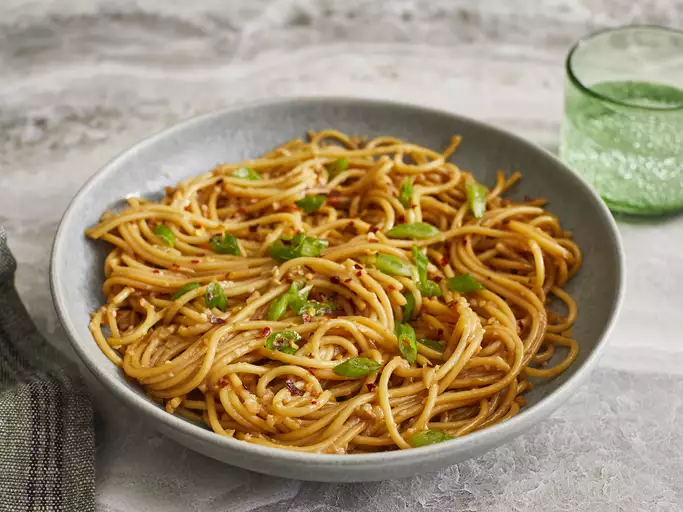

Home
Garlic Noodles

Photo by Dotdash Meredith Food StudiosAll recipes
This is a Garlic Noodles recipe
This dish features a simple yet delicious ingredient, garlic!!
Ingredients:
For sauce:
- 2 tablespoons of soy sauce
- 1 tablespoons of oyster sauce
- 2 teaspoons of Worcestershire sauce
- 2 teaspoons of fish sauce
- 1/4 teaspoon of seasame oil
- 1 pinch of cayenne pepper
For noodles:
- 4 tablespoons of unsalted butter
- 8 minced garlic cloves
- 6 ounces of spaghetti
- 1/4 cup of finely grated Parmigiano-Reggiano cheese
- 1 tablespoon of chopped green onion, or to taste
- 1 pinch of red pepper flakes
Instructions:
- Gather all ingredients. Stir soy sauce, oyster sauce, Worcestershire sauce, fish sauce, sesame oil, and cayenne pepper together in a small bowl for the secret sauce.
- Melt butter in a skillet over medium heat. Add garlic; cook and stir just until fragrant, about 1 minute. Quickly stir in the secret sauce and turn off the heat.
- Bring a large pot of lightly salted water to a boil. Cook spaghetti in boiling water, stirring occasionally, until tender yet slightly firm to the bite, about 12 minutes.
- Transfer spaghetti into the sauce using tongs, bringing some of the cooking water with it. Toss until well coated; stir in Parmesan cheese. Splash in more pasta water if noodles are too dry.
- Plate noodles; garnish with green onions and red pepper flakes.